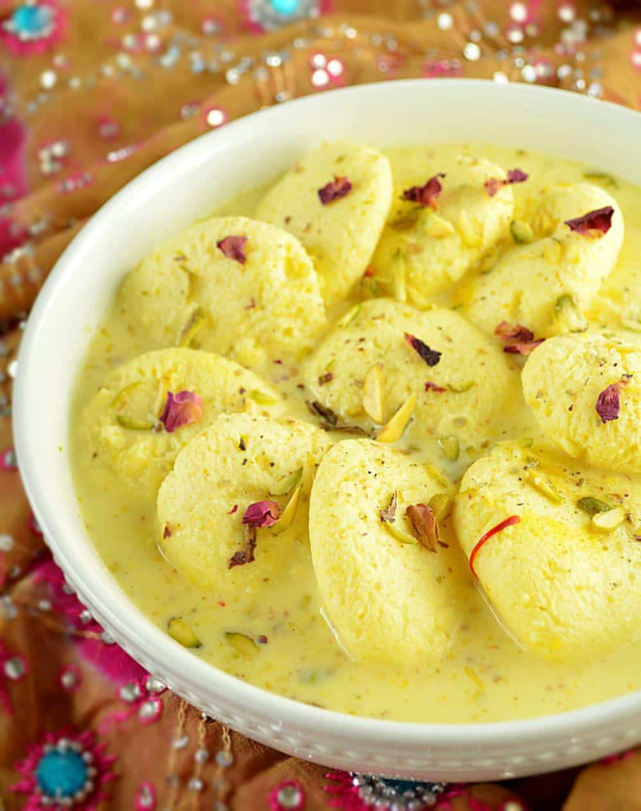

Gulab Jamun
Ingredients:
- 1 cup milk powder
- 1/4 cup all-purpose flour (maida)
- 1/4 tsp baking soda
- 2 tbsp ghee (clarified butter)
- 1/4 cup milk (warm, as needed to form dough)
- 1/2 tsp cardamom powder
- Ghee or oil (for deep frying)
Recipe
- Prepare Sugar Syrup: Boil sugar, water, and cardamom pods until
sugar dissolves, add lemon juice, saffron, and rose water, then keep warm. - Make Dough: Mix milk powder, flour, baking soda,
cardamom powder, and ghee, then gradually add warm milk to form a soft dough. - Shape Balls: Divide dough into small smooth balls without cracks.
- Fry Gulab Jamuns: Heat ghee or oil on low heat, fry balls until golden brown, stirring gently.
- Soak in Syrup: Add hot jamuns to warm sugar syrup and let them soak for at least 1-2 hours.
- Serve: Garnish with chopped nuts and serve warm or chilled.

Ras Malai
Ingredients:
- 1 liter full-fat milk
- 2 tbsp lemon juice or vinegar
- 1 tsp cornflour (optional, for binding)
- Sugar Syrup
- Rabri
Recipe
- Prepare Chhena (Paneer): Boil milk, add lemon juice to curdle it, strain, rinse, and knead until smooth.
- Make Rasmalai Discs: Shape chhena into small flat discs.
- Prepare Sugar Syrup: Boil water and sugar, then add chhena discs and cook until they double in size.
- Prepare Rabri (Milk Syrup): Boil milk until reduced, add sugar, saffron, cardamom, and chopped nuts.
- Assemble: Gently squeeze excess syrup from chhena discs and soak them in the rabri.
- Chill & Serve: Refrigerate for a few hours, garnish with nuts, and serve cold.
